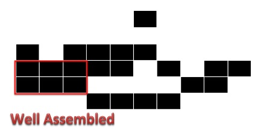
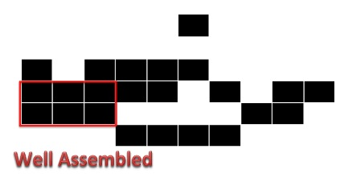

SIMULATION
THE WAVE NATURE of LIGHT
In Young's double-slit interferometer, light from each side of double-slit make interference fringe on a screen. This shows a fact that light has the wave nature, and thus, light is also described by the wave equation.
Solar Spectrum
Solar spectrum can be calculated with Plank’s law.

where, B is energy[W/m3], λ is wave length, h is planck constant 6.626×10−34 [J*s], c is speed of light 2.998×108[m/s], kB is boltzmann constant 1.381×10-23[J/K], and T is temperature 5800[K]
These are results of the simulation. Figure 1 shows strength of solar light depending wave length after taking interference effects into account. We can see that UV is greatly reduced while strength of visible lights is more than twice.
Compared with original solar spectrum, however, solar light is reduced excessively on all wave length. There is little difference between strength of UV and visible light. (Figure2)
It might be impossible that we get strong wavelength dependence, but at least we can cut over 90 % of UV.
ATTACHMENT and DETACHMENT of DNA SHEETS
DNA sheets are attached to each other with two types staple DNA on long and short sides of the sheets. Tm value is the temperature at which a half of DNA double helix dissociates into single strands, and the one on a long side is 71.8℃ while the one on a short side is 58.8℃. This means probabilities of attachments of both sides are different. At the same time, detachments of the sheets also happen. These will cause deviation of or make blanks in a linked structure. Therefore, it is necessary to simulate whether the supposed structure is made.
Our simulation was made with Random Function of mathematica, changing probability of conation for detachment.
The below is simulation results. The graph makes comparisons the total or well assembled number of DNA sheets possibly linked on average at a low detachment rate with a high detachment rate when 100 attachments or detachments totally happen. The two figures show examples of the structures.
 
